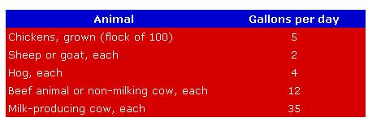

Ask Poppy George
July/August 1974
"Poppy George" Plitt graduated from college with a degree in agriculture in 1932. During the years that followed he made a good many friends and a name for himself (as a gentleman, inventor and executive) in the field of bird and animal husbandry and care. At various points in his career, Mr. Plitt served as Director of Nutritional Research and Field Services for two of the East's larger grain mills. He is also the originator of Pride of the Valley Wild Bird Food and Kleen Kitty cat litter. Mr. Plitt now raises and trains standardbred horses and keeps a wide variety of other birds and animals on a New York farm.
Poppy George" is now sharing his experience by giving MOTHER's readers down-to-earth advice on the care and feeding of homestead livestock. Questions should be mailed to Mr. George Plitt, Happiness Hills Farms, RD 3, Addison, N. Y. 14801.
QUESTION: Can you tell me how much water livestock and poultry require?
ANSWER: In my opinion, water is the lifeblood of your home and farm. It's most important, therefore, not to overstock a homestead beyond its ability to slake your livestock's thirst.
Here's a good rule of thumb for estimating water needs:
You may, however, have an individual that will consume a bit more or less, so forgive me if my figures aren't 100% accurate.
QUESTION: I'm expecting . . . that is, my mare is due to foal in July. What should I do when she gives birth?
ANSWE R: [1] When a foal is born I promptly apply a 2% tincture of iodine to the navel. This can be done by putting the disinfectant in a small paper cup and pouring the contents over the umbilical stump and against the body wall where the cord was attached. Repeat this procedure for two or three days to help prevent infection.
[2] Insert a glycerine suppository gently into the foal's rectum to induce a bowel movement and prevent impaction of meconium (first manure). I've sometimes put on a plastic glove, greased a finger with Vaseline and inserted it in the rectum for gentle removal of the blockage.
The foal may show signs of difficulty in moving its bowels (by assuming the typical stance, carrying its tail upright and wagging it unnaturally). In that case, use a baby syringe to give an enema of lukewarm water and Ivory soapsuds.
[3] As a precautionary measure, I administer an injection of tetanus toxoid and one of penicillin in the center of the neck triangle at birth.
[4] The foal should suck from the mother within an hour after delivery. The first milk (colostrum) released by the mare-and by womenfolk too-contains a wealth of nature's own antibodies.
Some mares, particularly young maidens, may have trouble letting down their milk. (I find that an injection of oxytocin usually does the job in such cases.) Others lack a strong maternal instinct and may not let their foals nurse.
In either event, wash the dam's teats and udder (bag) with a clean, damp cloth to remove dirt. Then extract her milk with a human breast pump, available inexpensively at most drugstores. Pour the liquid into a clean soft drink bottle. When the container is full, fit it with a sheep nipple (about 250) and let the foal suck while the milk is still lukewarm.
I recommend feeding the baby every four hours around the clock for the first few days. This will mean a bit of lost sleep, but you'll agree that it's worth it to save the efforts and cost of the eleven months you've already spent waiting for the foal.
Keep trying to induce the mare to let her offspring nurse . . . which she usually does after a few days or a week. Then, of course, you can stop being mother" and let nature take over.
If you're not successful in that effort, stand a nanny goat on an elevated platform and let the foal suck this foster mother. Her milk is good for the young horse.
QUESTION: I'm planning to raise some baby chicks. Is there anything I can combine with high-priced starter food to cut my costs?
ANSWER: If there's a chick hatchery nearby, ask the operators for their infertile eggs or "test-outs": eggs in which the embryo started to grow and then died. These duds are usually candied out and removed from the incubators on a weekly basis, and hatcheries are glad to save a trip to the dump by giving them away.
Hard boil the rejects, chop them fine (shell and all) and put a small amount on top of the feeder. Later on, when the chicks are used to the new food, you can simply slice the eggs. You'll find the birds will love this diet . . . it will be a circus to watch their antics. Don't overfeed the chicks, however, but give them just what they'll clean up in ten or fifteen minutes each day.
Another good source of low-cost chick feed is any large poultry farm where eggs are candied and the "bloodspots" removed. In most states it's illegal to sell such layings for human consumption, so they'll generally be given to you free. Handled in the manner I've described, these too make an excellent and economical supplement for hogs as well as for chickens. This is a good example of how a usable waste product can be recycled to advantage.
QUESTION: Here in the South, where we're farming, I've heard a lot about "Bermuda grass tremors" affecting livestock. Can you tell me what this condition is, and what can be done for stricken animals?
ANSWER: "Bermuda grass tremors" is believed to be caused by a toxin produced by a certain fungus. To my knowledge, no specific remedy is yet available. The symptoms of affected horses and cows include muscular tremors, violent shaking and loss of coordination.
Do not attempt to drive such animals . . . coax them with feed to leave the field at their own pace. Individual feeding and watering will usually save them. The symptoms generally disappear over a period of from one to three weeks.
QUESTION: Should I feed my hop Glauber's salts? A farmer told me it was important to keep their bowels open.
ANSWER: This medication-a combination of ingredients including Epsom salts-is rarely needed if animals are fed properly.
QUESTION: How long is it practical to keep laying chickens?
ANSWER: I feel that two years is the limit. If a layer's output in her first year is 200 eggs, her second-year production will generally be down 20% to 160.
In the first season, however, you'll probably get some peewee and pullet eggs initially, with the size gradually improving to medium and large . . . whereas a yearling hen, when she comes out of her molt, will go right into the laying of large eggs. The monetary return should therefore be about equal for the two years.
Each season thereafter, output will continue to drop about 20% . . . so it's best to eat, can or sell hens when they've finished their second year of production.
QUESTION: Help, quick! How can we keep our hens from eating their layings? We thought at first they were doing the damage accidentally when they shared their favorite nest, but I've caught them pecking and stomping the eggs. The flock is well fed, and-though we do give them their own eggshells-we toast the shells in the oven first and crush them fine. Is there anything we can do about their frustrating habit?
ANSWER: Here are some suggestions:
[1] If you're using regular nests with a top and sides, tack a piece of burlap or dark cloth over the front and cut or tear the material into strips. This will allow the hens to enter and lay their eggs, but will darken the interiors so they can't see well.
[2] Place sawdust, shavings or Stay-Dry (dried, shredded sugar cane) about two inches deep in the bottoms of the nests to cushion the eggs from breaking. Don't use straw unless you must.
[3] Gather the eggs every hour in the morning if possible.
[4] If you can, get crushed oyster shells at the feedstore and keep this low-cost supplement in a box in the chickenhouse where the hens can have access to it.
[5] Buy some inexpensive cod-liver oil (low potency, 1,000 units of vitamin A to 100 of vitamin D), put a little on grain-just enough to coat it-and place the mixture on top of your laying mash feeder. This will strengthen the shells of your flock's eggs.
[6] As a final resort, you can take a knife and cut about an eighth of an inch off the upper portion of the hens' beaks. It will look odd but does much to discourage the fowls from going on an egg-eating spree.
 |
 |
|